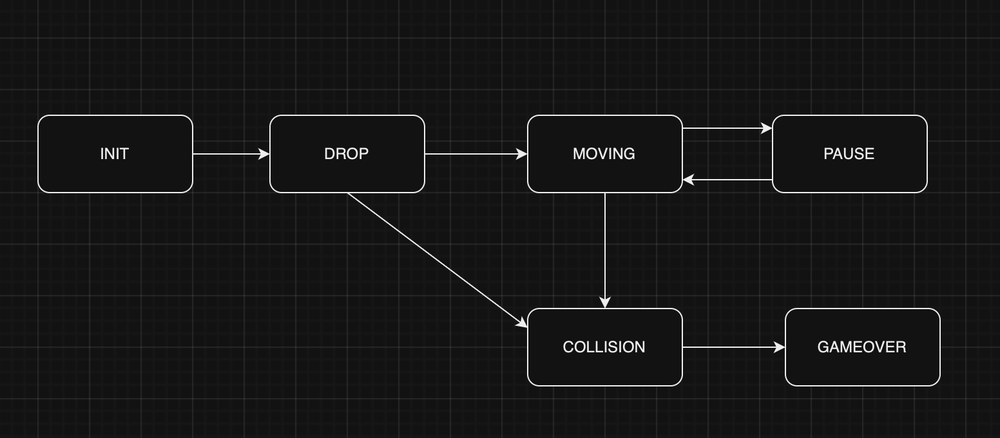

Loading...
Searching...
No Matches
BrickGame Тетрис
BrickGame
Введение
BrickGame — это консольная игра Тетрис, разработанная на C с использованием библиотеки ncurses.в которой игроки управляют падающими фигурами с целью заполнить горизонтальные линии на игровом поле. Игра заканчивается, когда блоки не могут больше поместиться на поле.
Основные особенности
Игровое поле:
- Размер: 10x20 ячеек.
- Элементы: Блоки разной формы и цвета, которые падают сверху и должны быть уложены в горизонтальные линии.
Управление и механика:
- Начать новую игру - 'enter'
- Приостановка игры с помощью клавиши 'p'
- Завершить игру - 'esc'
- Движение влево - стрелка влево
- Движение вправо - стрелка вправо
- Движение вниз - стрелка вниз
- Ускорение падения фигуры (при нажатии кнопки фигура перемещается до конца вниз)
- Поворот - кнопка 'z'
- Отображается следующая фигура, которая появится после текущей.
- Завершение игры при достижении верхней границы игрового поля;
Очки и уровни:
- Игроки зарабатывают очки за удаление линий.
- Уровни повышаются по мере набора очков, что увеличивает скорость падения фигур.
Подсчет очков:
- 1 линия очищена: 100 очков
- 2 линии очищены: 300 очков
- 3 линии очищены: 700 очков
- 4 линии очищены: 1500 очков
Дополнительно
Подсчет очков и рекорд в игре
- Высокий счет сохраняется для каждого сеанса игры.
- Отображение текущего счета игрока и достигнутого рекорда
Механика уровней
- Каждый раз, когда игрок набирает 600 очков, уровень увеличивается на 1
- Повышение уровня увеличивает скорость движения фигур. Максимальное количество уровней — 10
Установка
git clone XXX && cd src- Перейдите в директорию
src/. - Для установки проекта выполните
make install - Для начала игры выполните
make run
Использование
- Используйте стрелки для перемещения.
- Нажмите стрелку вниз, чтобы фигура падала быстрее.
- Нажмите 'z', чтобы вращать фигуру.
Диаграмма конечного автомата, используемый в логике игры.

INIT:
- Переход к DROP: Игра начата, блок начинает падать.
DROP:
- Переход к MOVING: Как только блок достиг нижней границы или соприкоснулся с другими блоками, он начинает двигаться.
- Переход к GAMEOVER через COLLISION: Если блок достиг верхней границы игрового поля.
MOVING:
- Переход к COLLISION: Блок сталкивается с другой фигурой или нижней границей.
- Переход к PAUSE: Игрок нажимает кнопку паузы.
COLLISION:
- Переход к DROP: После обработки столкновения генерируется новый блок.
- Переход к GAMEOVER: Если произошла ошибка, например, блоки достигли верхней границы.
PAUSE:
- Переход к MOVING: Игра возобновляется после паузы.
GAMEOVER:
- Конец игры.
Generated by